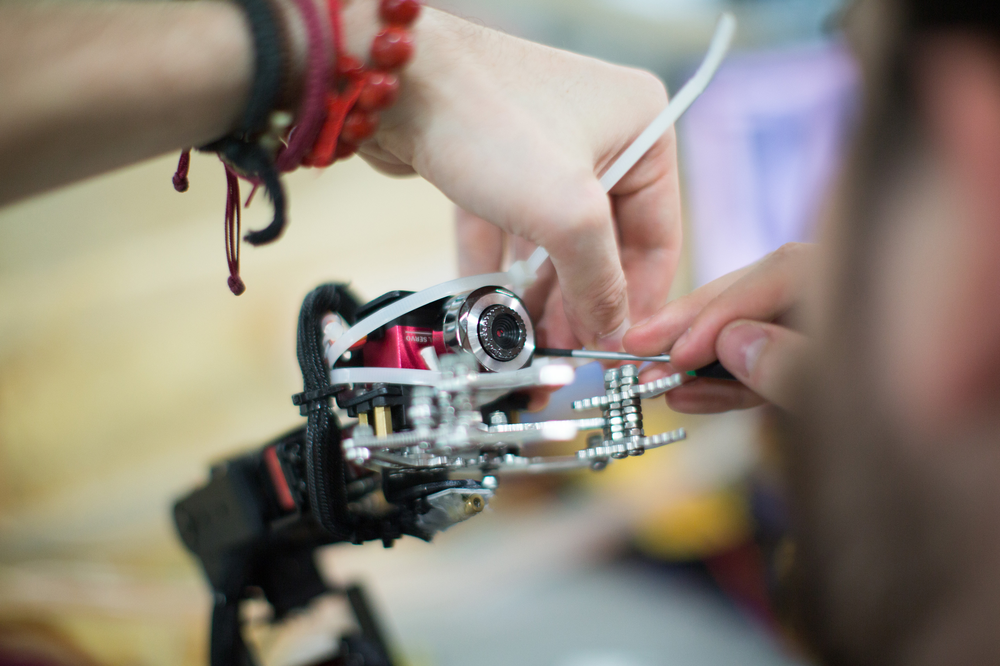
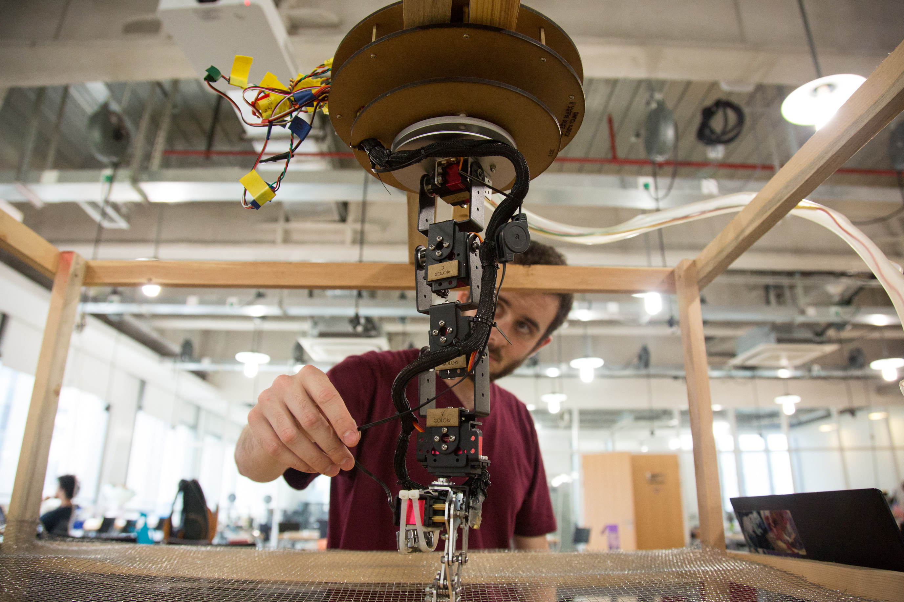
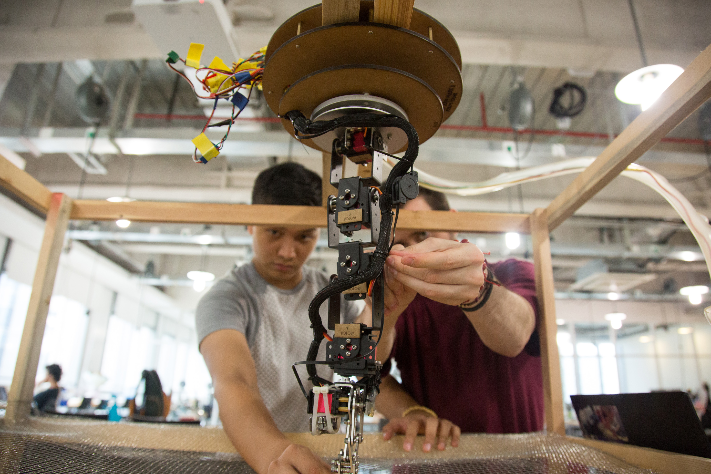
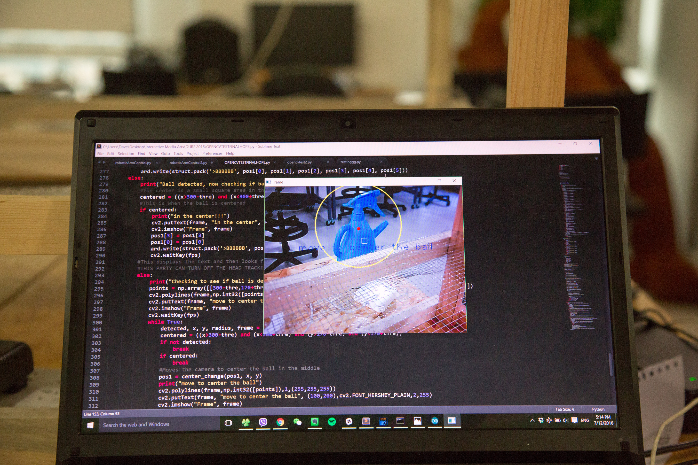

One Summer's Assistive Robotic Arm Research Project
Summer research project funded by the marvelous people at NYU Shanghai. Continuing with my interest of making computers see this beautiful world, I teamed up with my fellow classmates to prototype a seeing assistive robotic arm. This one combined a Python flavor of OpenCV with a lot of hardware to produce a seeing and helpful robotic arm. Currently not at full functionality, but will be revisited soon when I return to Shanghai in the Spring.
The Ingredients!
- Joe Young's Robotic Arm, so graciously lent to us for the Summer
- Portable USB Webcam, with extra long cable
- Python flavored OpenCV library (for vision)
- Arduino
- Wooden chassis + chicken wire
Photographs and more detail
Here's the little bugger, got to give him the gift of vision so that he can see this beautiful world. We tried using a Logitech webcam to maximize quality, but turns it out image quality doesn't matter too much when it comes to color detection. The Logitech webcam was also too large, so we opted for a smaller and lighter webcam. The only advantage that would have been great from using the Logitech webcam would have been more video stream control. Contrast and white balance control are really useful when trying to optimize the way the webcam detects color.
Like Prometheus tending the flame.
 The credit to the wooden chassis should all go to Nicholas, Sevi, and Jennifer. While I was working on the head control they were tirelessly assembling the chassis from wood bought from a small shop near the school. Really amazing job! Super steady and secure.

Look through the eyes of the computer, as it blinks and beeps at its creator.
A bit of a peek into how the computer was processing the video feed. We drew a small crosshair type of overlay in order to visualize what areas of the feed were being detected. If the color it was looking for was not fully centered, the OpenCV python code would send instructions to the Arduino side of things to move and center accordingly.